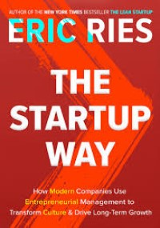

Summary
The Startup Way by Eric Reis is a follow up of his 2011 novel, The Lean Startup. In this new novel, Reis talks of the many ways of maintaining and growing a business through entrepreneurial management. Through these tactics, any company, from small startups to large enterprises, can sustainably grow and have a long-term impact. In The Startup Way, the main focus is the comparison between old-fashioned companies and modern companies. While old-fashioned companies focus more on return investment and low-risk, modern companies prioritize continuous innovation. Instead of launching large products on the market, releasing constant innovation to clients yields more success. There are three main phases to transform a company from a business to an enterprise, critical mass, scaling up, and deep systems. Critical mass refers to building a strong foundation, with teams working together to build a vision of success. Scaling up takes the existing strong foundation and adds more people to support the vision. The final phase, deep systems, involves engaging the company in investments and entrepreneurial practices. By reading this book and adopting the “Startup Way”, any business owner can become the head of their own enterprise.